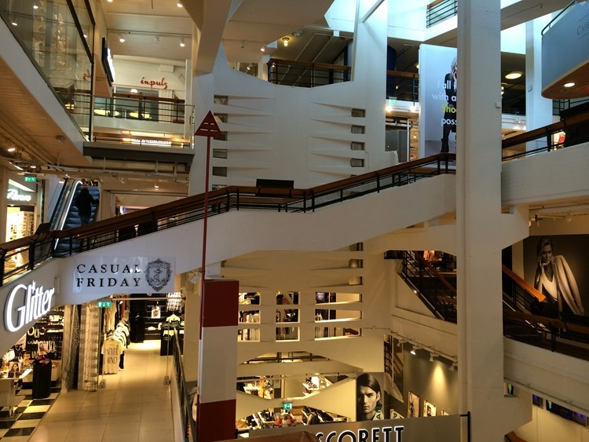

<!doctype html>
<html lang="en">
<head>
  <meta charset="utf-8">
  <title>Luleå - Vad jag längtar dit</title>
  <link href="https://fonts.googleapis.com/css?family=Bitter" rel="stylesheet">
  <link rel="stylesheet" href="css/normalize.css" />
  <link rel="stylesheet" href="css/styles.css">
  <!--[if lt IE 9]>
    <script src="https://cdnjs.cloudflare.com/ajax/libs/html5shiv/3.7.3/html5shiv.js"></script>
  <![endif]-->
</head>
<body>
  <div class="container">
  <div class="data-background-image" >
  <!-- 
  <a class="lulea-logo" href="./index.html" class="selected"><h1>LULEÅ</h1><h3>Vad jag längtar dit</h3></a>
  </div>
  <div class="content-wrapper">
    <nav>
      <ul>
        <li><a href="./boende.html">Boende</a></li>
        <li><a href="./aktiviteter.html">Aktiviteter</a></li>
        <li><a href="./shopping.html">Shopping</a></li>
        <li><a href="./äta.html">Äta</a></li>
        <li><a href="./resa.html">Resa</a></li>
      </ul>
    </nav>
    <section class="main-content">
      <article id="melderstein">
        
    	  <div class="main-section-text">
          <h2>Melderstein Herrgård</h2>
          <h5>Bo Ståndaktigt</h5>
          <p>Melderstein Herrgårds gamla bruksmiljö har en speciell harmoni och atmosfär. Vi har fullständiga rättigheter, konferenslokaler, bastu och eget kapell.</p>
          <p>Våra 13 rum finns i två byggnader, herrgården och gårdshuset.</p>
          <h5>Öppet</h5>
          <p>För grupper och sällskap året runt.</p>
          <p>För individuella gäster under sommarhalvåret.</p>
    	  </div>
        <br class="clear">
      </article>
      <article id="alviks">
        <div class="main-section-text">
          <h2>Alviks trafik AB</h2>
          <p>Alviks Trafik AB driver turist- och beställningstrafik i samarbete med det delägda företaget NEX Resebyrå AB. Genom vårt engagemang i NEX läggs stor vikt vid företagsresor och inkommande turism.</p>
          <p>Bussarna är i storleksklassen 14-63 passagerare. Vi har ett stort antal heluristbussar som är utrustade med WC, dvd, telefon, stereo och kaffekokare. Vissa bussar har även kylskåp och mikrovågsugn.</p>
    	  </div>
    	  
        <br class="clear">
      </article>
      <article id="galleria">
        
    	  <div class="main-section-text">
          <h2>Shopping Galleria</h2>
          <h5>Världens första</h5>
          <p>Luleås första galleria var unik när den byggdes i mitten av 1950-talet, världens första köpcentrum inomhus.</p>
          <p>Än idag huserar här ett stort antal butiker inom främst mode och skor men även böcker, tyger och inredning samt restaurang/café hittar du i denna galleria.</p>
    	  </div>
        <br class="clear">
      </article>
    	<article id="stenträsket">
        <div class="main-section-text">
          <h2>Stora Stenträsket</h2>
          <p>Stora Stenträsket ligger ett par mil norr om byn Niemisel i Luleå kommuns norra del.</p>
          <p>Det är fiskevattnet rikt på bland annat röding och regnbåge.</p>
          <h5>Stugor</h5>
          <p>Här finns stugor att hyra eller plats att campa. Stugor bokas i förväg.</p>
          <p>Strövstigar och iordningställda eldplatser för korvgrillning och fikapauser finns i nära anslutning till sjön.</p>
    	  </div>
    	  
        <br class="clear">
      </article>
    </section>
  </div>
    <footer>
      <p>&copy; Team #0 2016</p>
    </footer>
  </div>
</body>
</html>
